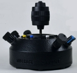
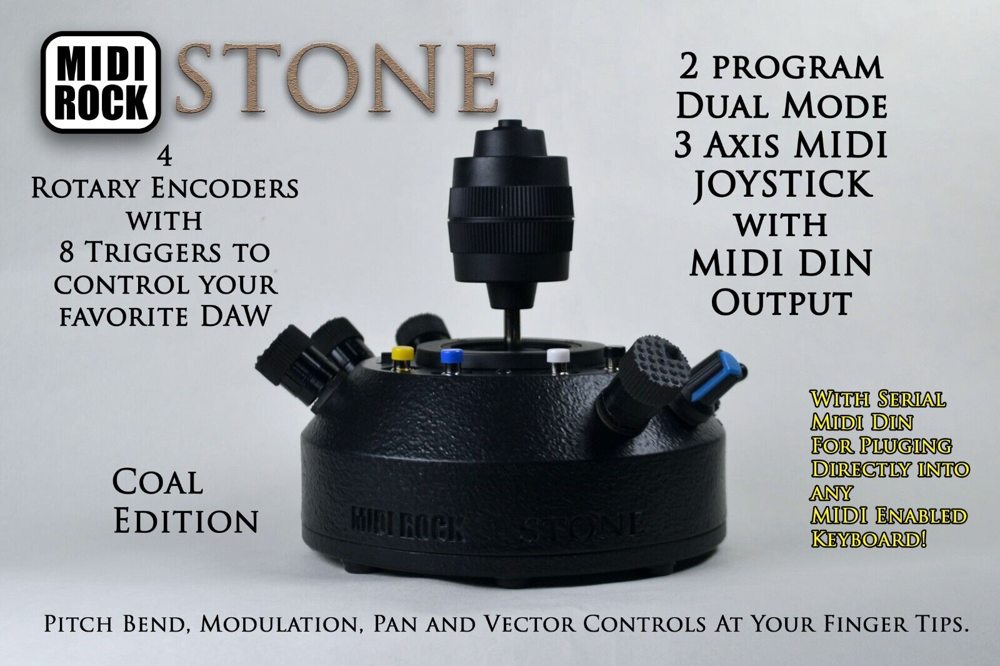
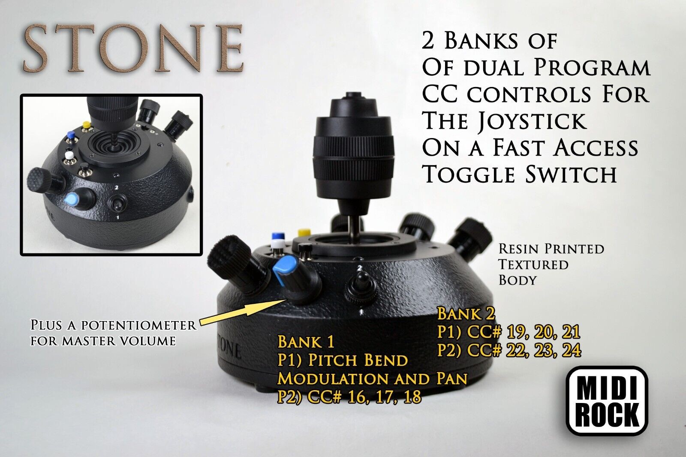
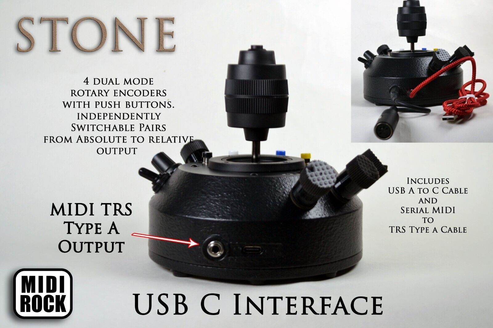
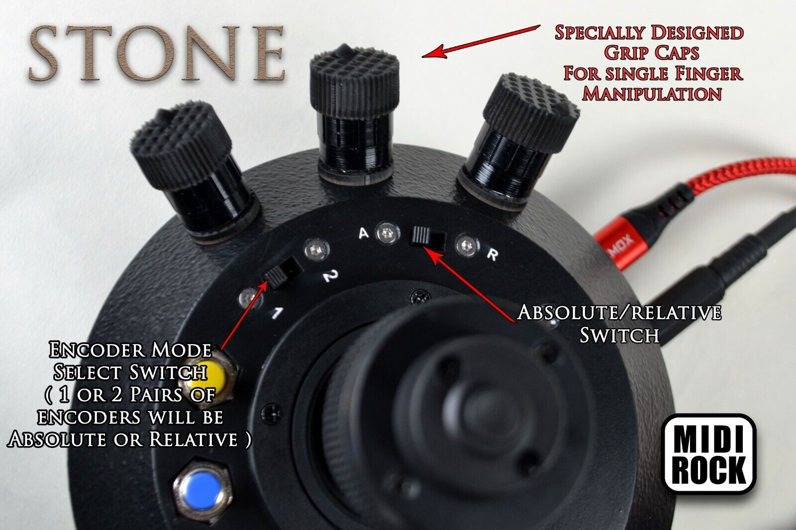
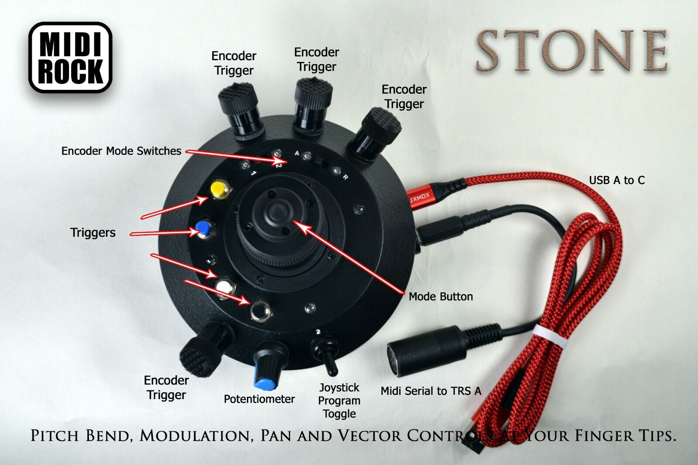

MIDI Rock: Stone
 So I bought a MIDI Rock "Stone" joystick controller...

The labeled photos are actually the best documentation. The device comes with a small text file that introduces the Stone and reiterates the configuration settings.
However, I was determined to figure it out from the perspective of the MIDI signals it transmits. Here is my analysis of the signals transmitted, with the command
aseqdump -p 'MIDI ROCK Joystick' :
Source Event Ch Data # comment
MODE 1, Switch 1, Absolute:
JOYSTICK:
20:0 Control change 0, controller 1, value 0 # Default center to Full South & West
20:0 Control change 0, controller 1, value 127 # Full North & East
20:0 Pitch bend 0, value -8192 # Full South
20:0 Pitch bend 0, value 0 # Default center
20:0 Pitch bend 0, value 8191 # Full North
BUTTON+JOYSTICK (X & Y):
20:0 Control change 0, controller 16, value 0 # Full South & West
20:0 Control change 0, controller 16, value 60 # Default center
20:0 Control change 0, controller 16, value 127 # Full North & East
20:0 Control change 0, controller 17, value 0 # Due North
20:0 Control change 0, controller 17, value 127 # Due South
TWIST L/R:
20:0 Control change 0, controller 10, value 0 # Full West (left turn)
20:0 Control change 0, controller 10, value 60 # Default center
20:0 Control change 0, controller 10, value 127 # Full East (right turn)
BUTTON+TWIST:
20:0 Control change 0, controller 18, value 0 # Full West (left turn)
20:0 Control change 0, controller 18, value 60 # Default center
20:0 Control change 0, controller 18, value 127 # Full East (right turn)
POTENTIOMETER:
20:0 Control change 0, controller 9, value 127 # Full North
20:0 Control change 0, controller 9, value 0 # Full South
BUTTON-KNOB (North West):
20:0 Note on 0, note 84, velocity 127 # depress
20:0 Note off 0, note 84, velocity 0 # release
20:0 Control change 0, controller 28, value 0 # full turn left (increments of 4)
20:0 Control change 0, controller 28, value 127 # full turn right (increments of 4)
BUTTON-KNOB (West):
20:0 Note on 0, note 83, velocity 127 # depress
20:0 Note off 0, note 83, velocity 0 # release
20:0 Control change 0, controller 27, value 0 # full turn left (increments of 4)
20:0 Control change 0, controller 27, value 127 # full turn right (increments of 4)
BUTTON-KNOB (South West):
20:0 Note on 0, note 82, velocity 127 # depress
20:0 Note off 0, note 82, velocity 0 # release
20:0 Control change 0, controller 26, value 0 # full turn left (increments of 4)
20:0 Control change 0, controller 26, value 127 # full turn right (increments of 4)
BUTTON-KNOB (East):
20:0 Note on 0, note 81, velocity 127 # depress
20:0 Note off 0, note 81, velocity 0 # release
20:0 Control change 0, controller 25, value 0 # full turn left (increments of 4)
20:0 Control change 0, controller 25, value 127 # full turn right (increments of 4)
GREEN:
20:0 Note on 0, note 85, velocity 127 # depress
20:0 Note off 0, note 85, velocity 0 # release
RED:
20:0 Note on 0, note 86, velocity 127 # depress
20:0 Note off 0, note 86, velocity 0 # release
BLUE:
20:0 Note on 0, note 87, velocity 127 # depress
20:0 Note off 0, note 87, velocity 0 # release
YELLOW:
20:0 Note on 0, note 88, velocity 127 # depress
20:0 Note off 0, note 88, velocity 0 # release
MODE 1, Switch 1, Relative:
BUTTON-KNOB (North West):
20:0 Control change 0, controller 32, value 1 # turn left
20:0 Control change 0, controller 32, value 127 # turn right
BUTTON-KNOB (West):
20:0 Control change 0, controller 31, value 1 # turn left
20:0 Control change 0, controller 31, value 127 # turn right
MODE 1, Switch 2, Relative:
BUTTON-KNOB (North West):
20:0 Control change 0, controller 32, value 1 # turn left
20:0 Control change 0, controller 32, value 127 # turn right
BUTTON-KNOB (West):
20:0 Control change 0, controller 31, value 1 # turn left
20:0 Control change 0, controller 31, value 127 # turn right
BUTTON-KNOB (South West):
20:0 Control change 0, controller 30, value 1 # turn left
20:0 Control change 0, controller 30, value 127 # turn right
BUTTON-KNOB (East):
20:0 Control change 0, controller 29, value 1 # turn left
20:0 Control change 0, controller 29, value 127 # turn right
MODE 2, Switch 1/2, Absolute/Relative:
JOYSTICK:
20:0 Control change 0, controller 19, value 0 # Default center to Full South & West
20:0 Control change 0, controller 19, value 127 # Full North & East
20:0 Control change 0, controller 20, value 0 # Full West
20:0 Control change 0, controller 20, value 64 # Default center
20:0 Control change 0, controller 20, value 127 # Full East
BUTTON+JOYSTICK:
20:0 Control change 0, controller 23, value 0 # Full North
20:0 Control change 0, controller 23, value 60 # Default center
20:0 Control change 0, controller 23, value 127 # Full South
TWIST L/R:
20:0 Control change 0, controller 21, value 0 # Full West (left turn)
20:0 Control change 0, controller 21, value 60 # Default center
20:0 Control change 0, controller 21, value 127 # Full East (right turn)
BUTTON-KNOBS:
Same as MODE 1, Switch 1, Absolute
And here are the photos provided by the vendor:
   
I was hoping that each switch and mode would change every control. But no.
But after contacting the maker, I can reprogram with the source and the right tools.
To Be Continued...